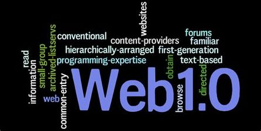
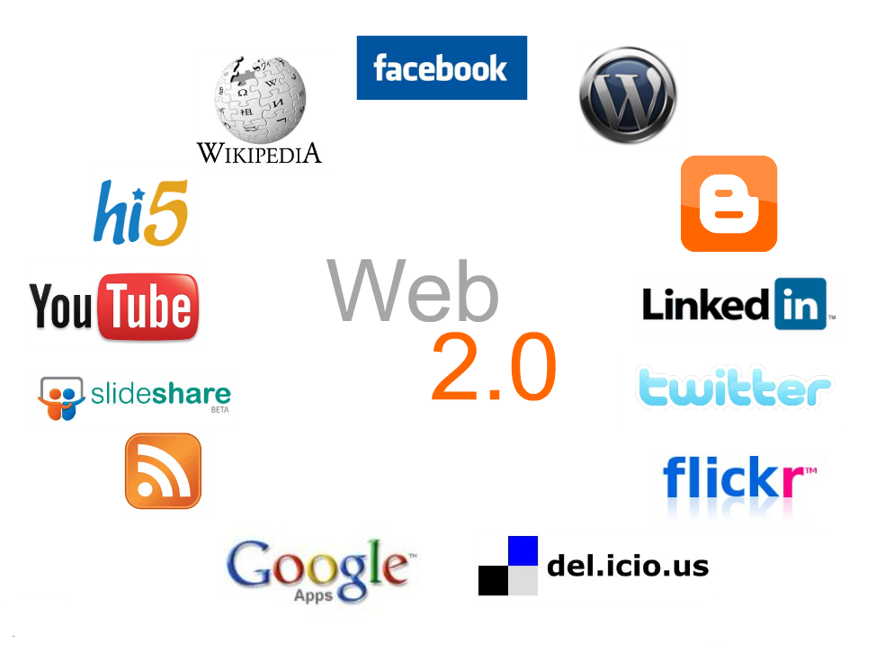
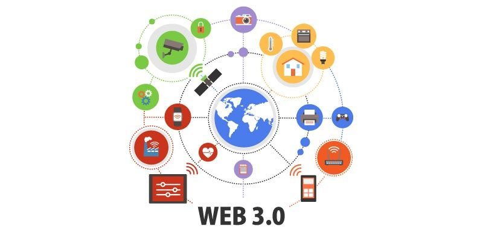

Línea del tiempo
Evolución de la Web
Web 1.0

El comienzo de la web data de los años 60, donde el usuario es un mero
consumidor del contenido que es subido a servidores por parte de expertos
informáticos. En esta etapa los navegadores eran solo de texto (ELISA) y
a pesar de que eran muy simples, disfrutaban de una gran rapidez.
Su primera aparicion fue hacia 1990 y en ella solo se podía consumir
contenido. Se trataba de información a la que se podía acceder, pero
sin posibilidad de interactuar; era unidireccional.
Web 2.0

A partir del año 2001, y como consecuencia de la crisis de las empresas
denominadas .com, surge un cambio importante que da comienzo a la web 2.0.
El término Web 2.0, acuñado por Tom O' Reilly en el año 2004 hace referencia
a una segunda generación de modelos de páginas Web.
Web 3.0

La web 3.0 surge en 2006 para relacionar las webs de forma semántica,
lo que permite que la información pueda ser encontrada de forma más rápida
y eficiente debido a su estructuración.
Web 4.0
La web 4.0. empezó en el 2016 y se centra en ofrecer un comportamiento más inteligente y más
predictivo, de modo que podamos, con sólo realizar una afirmación o una llamada, poner en marcha
un conjunto de acciones que tendrán como resultando aquello que pedimos, deseamos o decimos.
En esta etapa la inteligencia artificial aparece como principal
tecnología haciendo que los sitios sean inteligentes y capaces de
interactuar y responder a las necesidades de los usuarios. Por eso
se asocia la web 4.0 a una web predictiva.